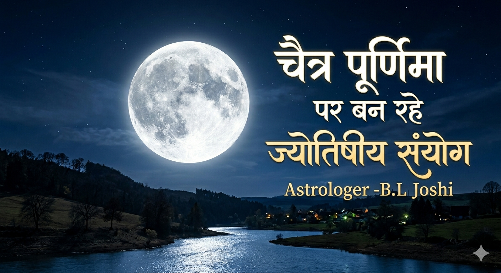

चैत्र पूर्णिमा: ग्रह दोष निवारण पर्व
यह दिन केवल एक तिथि नहीं, बल्कि ब्रह्मांडीय ऊर्जा का एक शक्तिशाली द्वार है।
🌙 कमजोर चंद्रमा के लिए
जिनका चंद्रमा कमजोर है, उन्हें अक्सर 'चंद्र ग्रहण दोष' या मानसिक अस्थिरता का सामना करना पड़ता है। चैत्र पूर्णिमा का पूर्ण चंद्रमा तुला राशि में होकर मन को शीतलता प्रदान करता है।
उपाय: रात के समय चंद्रमा को दूध मिश्रित जल से अर्घ्य दें। यह आपके अवचेतन मन को शांत करेगा।

🔥 कमजोर मंगल और मांगलिक दोष
मंगल की कमजोरी व्यक्ति को 'शक्तिहीन' महसूस कराती है, जबकि मांगलिक होना ऊर्जा की अधिकता या असंतुलन दिखाता है।
हनुमान जयंती का संयोग: हनुमान जी मंगल के अधिपति हैं। इस दिन उनकी आराधना करने से मंगल का उग्र स्वभाव शांत होता है और मांगलिक दोष का प्रभाव न्यूनतम हो जाता है।
विशेष: मंगल को बल देने के लिए इस दिन हनुमान जी को चमेली का तेल और सिंदूर चढ़ाएं।
किनके लिए यह दिन 'वरदान' है?
- विद्यार्थी: एकाग्रता बढ़ाने के लिए।
- कर्ज से परेशान लोग: मंगल ऋणहर्ता है, हनुमान जी की पूजा से कर्ज मुक्ति के रास्ते खुलते हैं।
- भयभीत जातक: जिन्हें अनजाना डर रहता है, उनके लिए हनुमान जी का 'अभय' कवच इस दिन सबसे प्रभावी होता है।